Uzyskiwanie uprawnień root
sudo
uruchomienie jednej komendy jako root
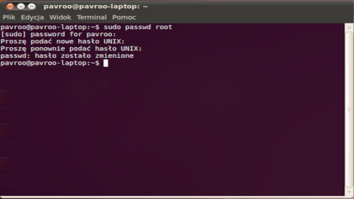
exit
wyjście z trybu root
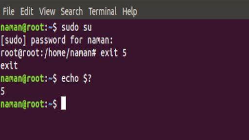
Zarządzanie pakietami (APT)
apt-get update
aktualizacja listy pakietów
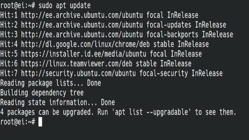
apt upgrade
aktualizacja systemu
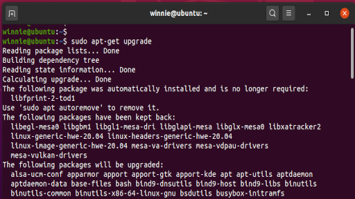
apt install pakiet
instalacja pakietu
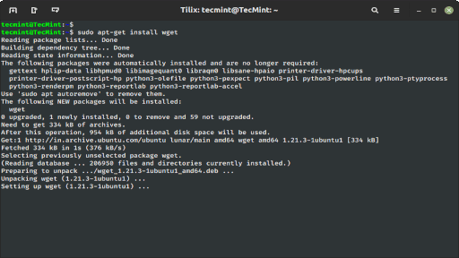
apt remove pakiet
usunięcie pakietu
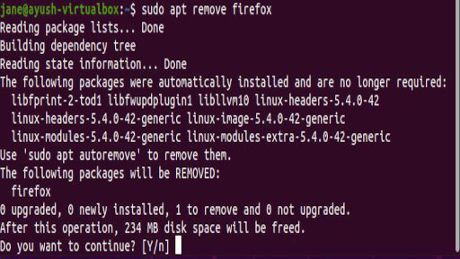
apt purge pakiet
usunięcie pakietu wraz z konfiguracją
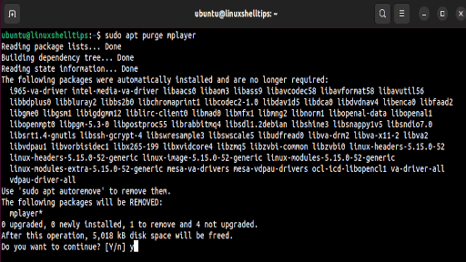
apt autoremove
usunięcie niepotrzebnych zależności
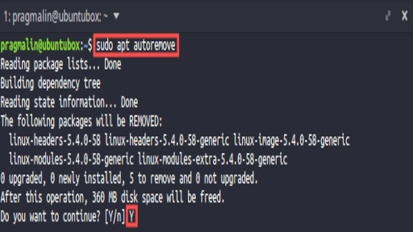
Pliki i katalogi
ls /ls -l
lista plików

cd /ścieżka
zmiana katalogu

pwd
aktualna ścieżka

mkdir nazwa
utworzenie katalogu

rm -r katalog
usunięcie katalogu z zawartością
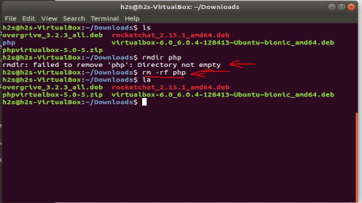
Podgląd i edycja plików
cat plik
wyświetlenie zawartości pliku

less plik
przewijany podgląd
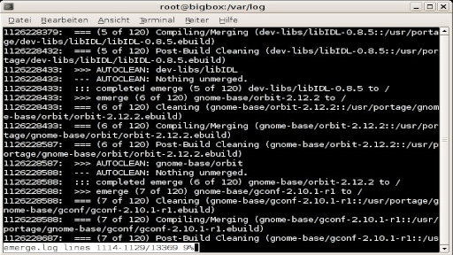
nano plik
edycja w edytorze nano
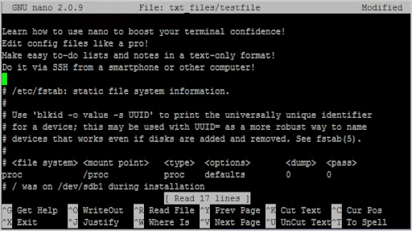
tail -f plik
podgląd logów na żywo
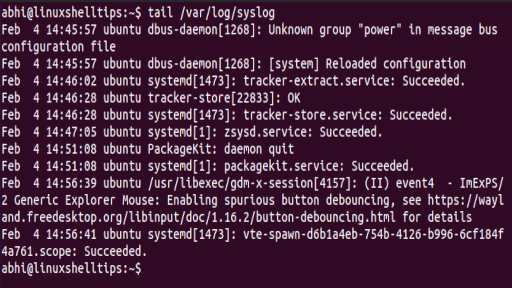
Procesy i system
top / htop
monitorowanie procesów
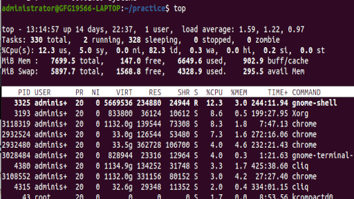
ps aux
lista procesów
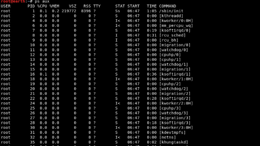
kill -9 PID
wymuszone zakończenie procesu

reboot
restart systemu
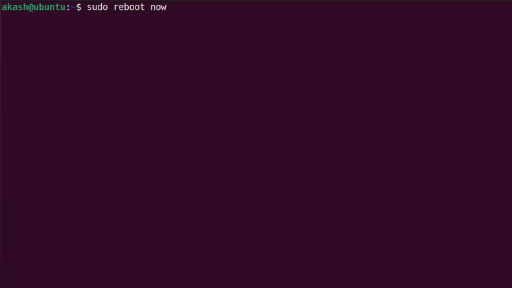
shutdown -r now
natychmiastowe wyłączenie systemu
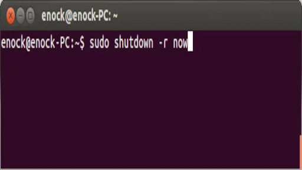
Karty sieciowe
nano /etc/netplan/01-netcfg.yaml
Otwiera plik konfiguracyjny sieci do edycji.
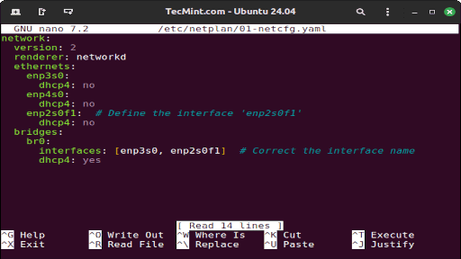
netplan apply
Stosuje zmiany w konfiguracji sieci.
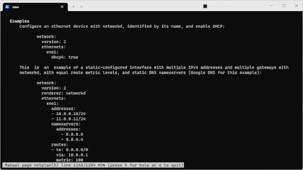
systemctl stop NetworkManager
Zatrzymuje usługę zarządzania siecią.
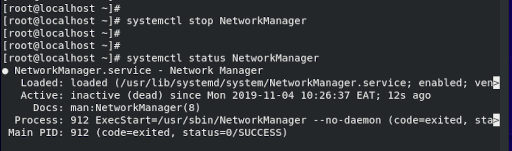
systemctl start NetworkManager
Uruchamia usługę zarządzania siecią.
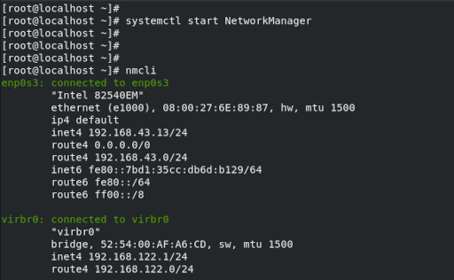
ip route del default
Usuwa domyślną trasę sieciową.
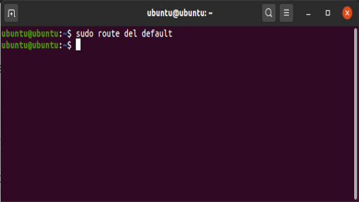
ip addr flush dev eth0
Usuwa wszystkie adresy IP z interfejsu.
.png)